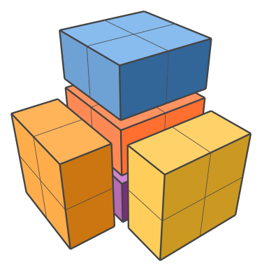
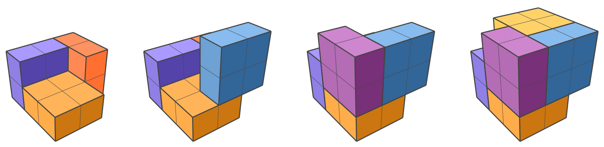
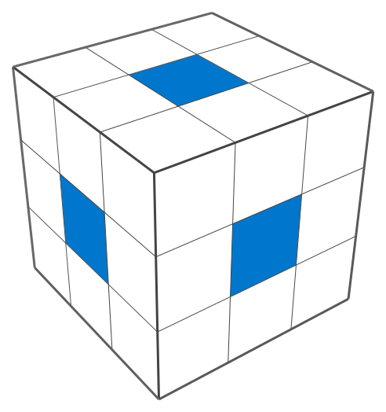

1 The Puzzle
Here’s a fun puzzle: Take six boxes, each \(1\times 2\times 2\) in size, and find a way to pack them into a \(3\times 3\times 3\) cube.

I learned about this puzzle through Donald Knuth’s The Art of Computer Programming, \(\S 7.2.2.1\). The six boxes have a total volume of 24 cubies (I’ll call a \(1\times 1\times 1\) unit a “cubie,” as Knuth does). They certainly have a chance of fitting into the 27 cubie spaces of the larger \(3\times 3\times 3\) volume. But the initial configurations I tried failed to fit more than five boxes in the space allowed:

You might be able to solve this by simply thinking about it. But it’s even more fun to play with a physical model.
Did you know that a \(2\times 2\) Lego brick with 2 tile-heights on top forms a perfect cube?

This allows us to construct the puzzle like so:


Here’s the hodgepodge model I built with my kids’ Legos:

I’ll write a little about the math behind this puzzle below, but for now I’ll give you a vertical break so you don’t accidentally see the solution. Try out the puzzle first!
2 The Solution
Here’s the solution:

The simplest way to characterize it is to notice that we’ve left the central cubie unoccupied.
As pointed out by Knuth, there’s a nice observation that can help you find this solution. Define a “face cubie” as one that’s adjacent to the center cubie. There are 6 of these, positioned like the middle squares of a Rubik’s cube:

Observation 1 \(\quad\) Every piece must occupy at least one face cubie.
This can be confirmed by listing all piece placements within the \(3\times 3\times 3\) space.
An immediate consequence of this observation is that — since there are 6 face cubies and 6 pieces — each piece must occupy exactly 1 face cubie. This alone can give you the solution, but things get even easier when you notice:
Observation 2 \(\quad\)
Any piece occupying the center cubie must also occupy 2 face cubies.
The consequence of this is that we must leave the center cubie vacant. In other words, every piece must be against one face of the \(3\times 3\times 3\) cube — one piece for each face. While this fact doesn’t completely specify the solution, it makes the search space so small that you can now find the answer easily.
If you’re curious about how algorithms can solve puzzles like this one, I recommend reading Knuth’s §7.2.2.1, which is relatively recent (in The Art of Computer Programming, volume 4B, published in 2022). He gives credit to Jan Slothouber and William Graatsma for inventing this puzzle, as referenced in their apparently out-of-print book Cubics from 1970 (pp. 108–109).
3 Notes on the Images
I wrote custom javascript tools to create the vector images in this article. If I have time, I may one day clean up that code and release it as a library. For now the code is quite messy, and can be found in this directory hosted on github.
I rendered the Lego images with Studio by BrickLink, which is awesome, and I’m grateful it’s free.
The dragon image (Here be Spoilers) was created with dall·e 2.